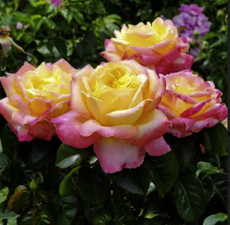
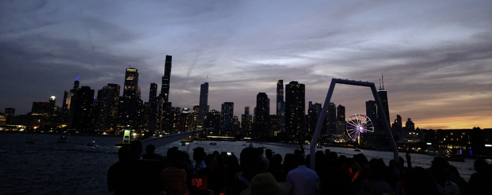
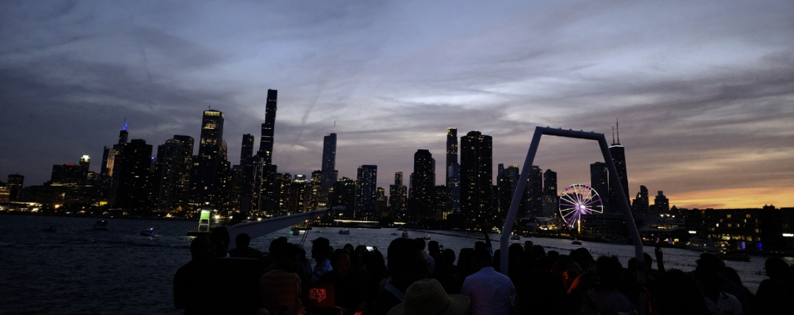
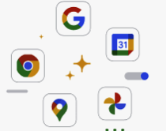
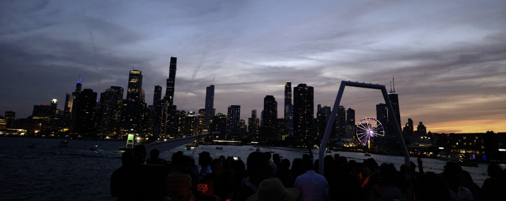

 

| Places I have traveled |
| California, Arizona, New York, Florida, Kentucky, Jamacia, Mexico, Bahamas, Tennessee, Mississippi, |
Welcome to my first website! I am an elementary school STEM teacher and I am currently taking computer science courses. I am excited to create and learn more about web design.
| Subjects taught in Elementary STEM | |||
|---|---|---|---|
| Quarter 1 | Quarter 2 | Quarter 3 | Quarter 4 |
| Engineer Design Process | Computer Science (coding) | Lego Engineering | Engineering/ Science stations |
Youtube- I enjoy listening to music and watching tutorials to learn new things on this site.
Mystery Science- This site is great for curious questioning minds. Interesting topics for students as well.
Google- I use Google Drive to organize files and information for school. I use Google Maps to make lists of places, restaurants, and activities to do when I am on vacation. I use Google photos to organize and share photos with my family and friends. I use Google slides to create visual presentations for teaching and STEM.


| Places I have traveled |
| California, Arizona, New York, Florida, Kentucky, Jamacia, Mexico, Bahamas, Tennessee, Mississippi, |